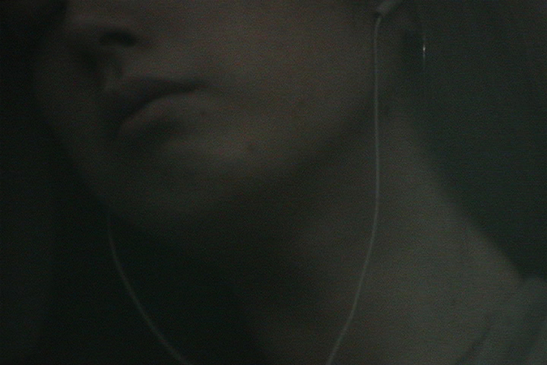
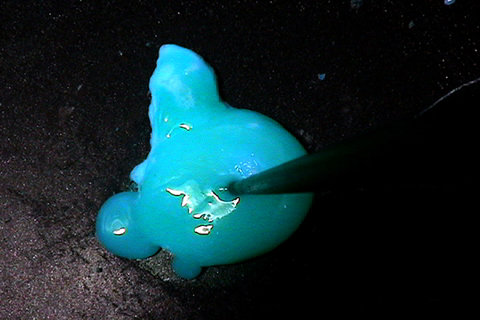
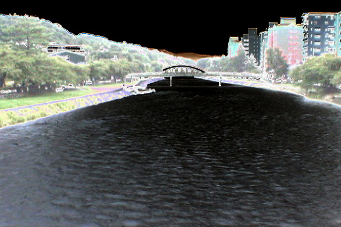
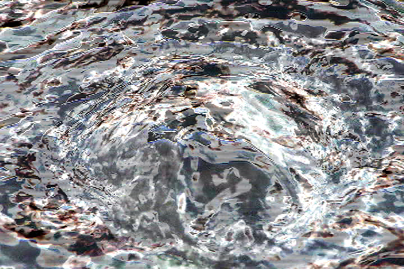
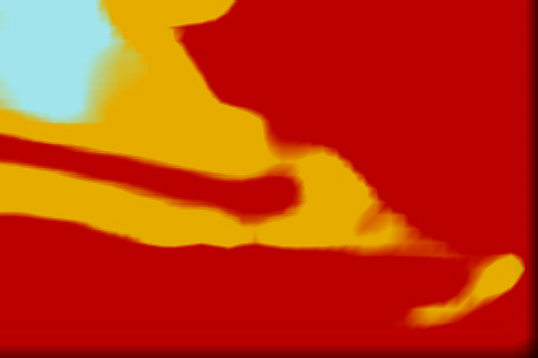

- 2013. 8. 2. 20:00
- 인사미술공간 Insa Art Space
- 고정연 Yona / 1988~
- 고정연 Yona은 요리인이자 작가이다. 그녀는 자신의 내부를 비추는 일기 같은 작업 방식을 통해, 자신을 포함한 사회를 거울처럼 반영한다. 작가는 어릴 적 갑작스레 겪어야만 했던 섭식장애 때문에, 신체의 외부와 내부를 넘나드는 ‘음식’에 대한 고민을 시작했다. 이후, 이는 일본 체류기간 동안 겪은 3.11 대지진 이후의 삶에 대한 작업 <지진 속에 라면을 삼키다 地震の中ラーメンを啜る>로 이어진다.
- <DEJAVU>, 2'59'', 2009
- 감정의 드로잉을 시도한다. 감정을 기록하고 기억하는 행위는 계속되어야 한다.
- <∞>, 5'44'' 2009
- 달걀이 먼저냐 닭이 먼저냐의 논쟁의 끝은 없다. 돌고 도는 그런 삶이다.
- <9월 23일 >, 4'17'', 2010
- ‘물’을 따라 여행한 9월 23일의 일기. 흐르는 물을 흐르는 영상으로 남기다.
- <지진 속에 라면을 삼키다 地震の中ラーメンを啜る>, 3'11'', 2011
- 3.11 일본 대지진 이후, 일본 체류 중 입으로 들어가는 음식에 대한 불신과 잿빛 포장지를 씌우는 사회에 대한 불안감이 짙어지는 나날들.
-

-

-

-

-
